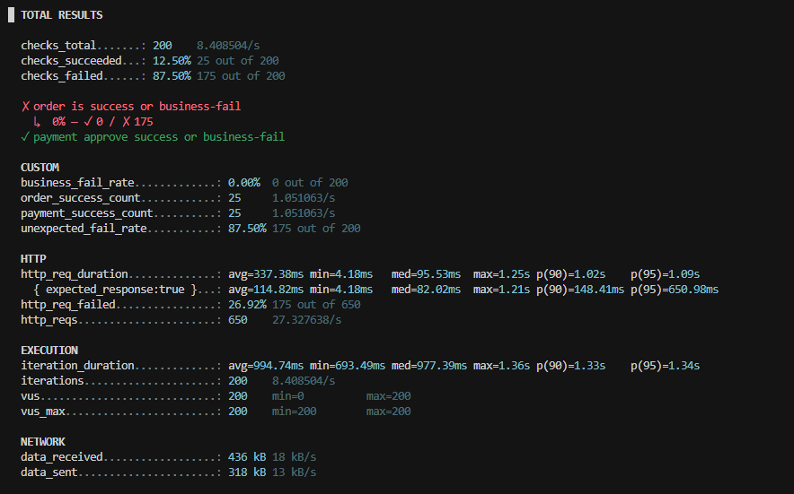
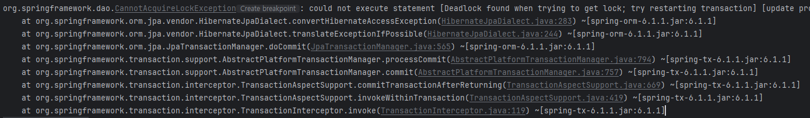
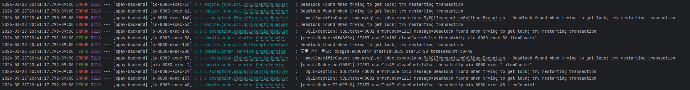
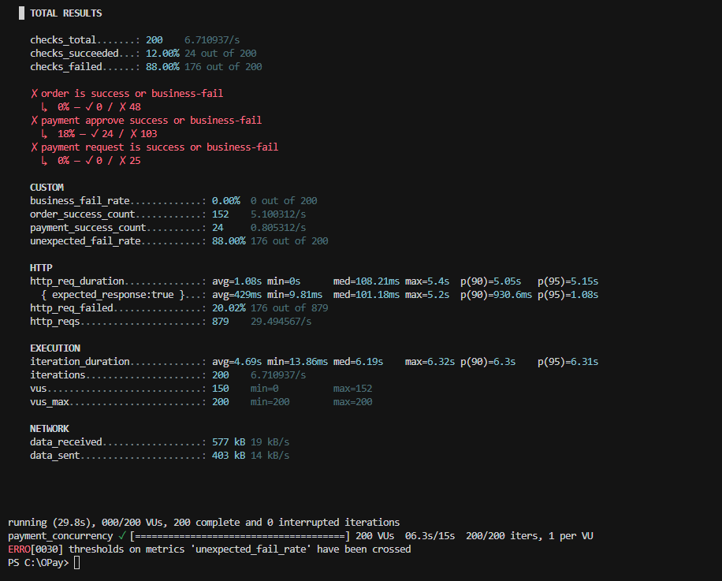
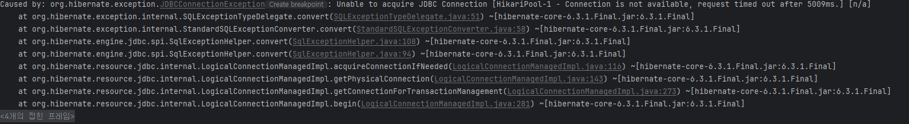
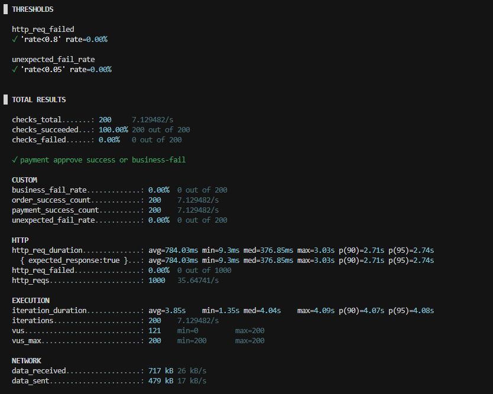
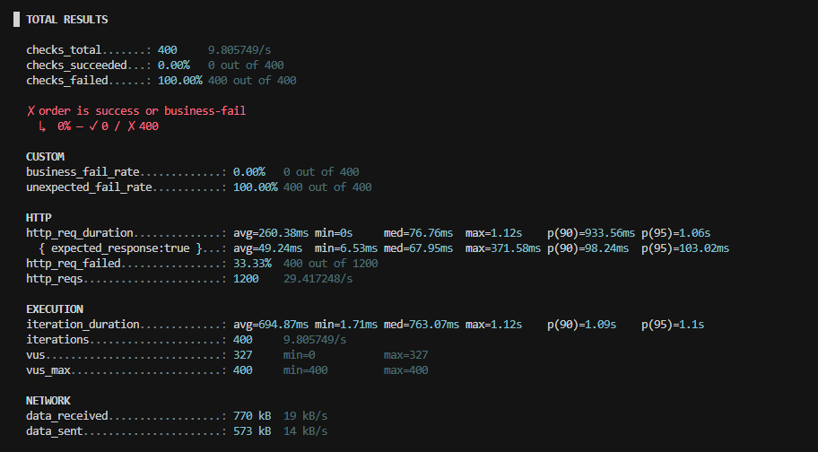
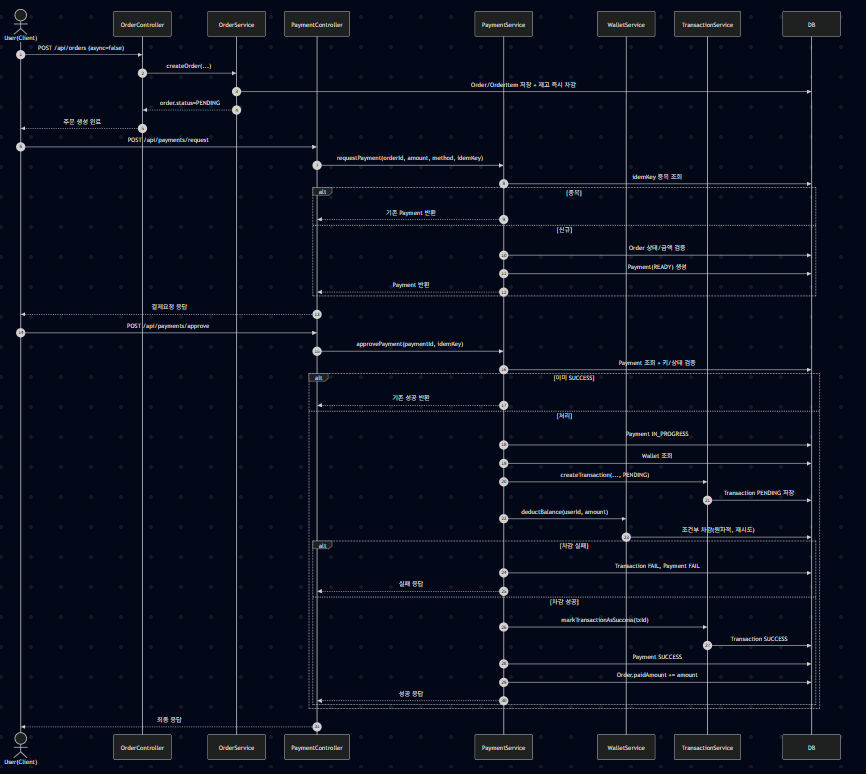
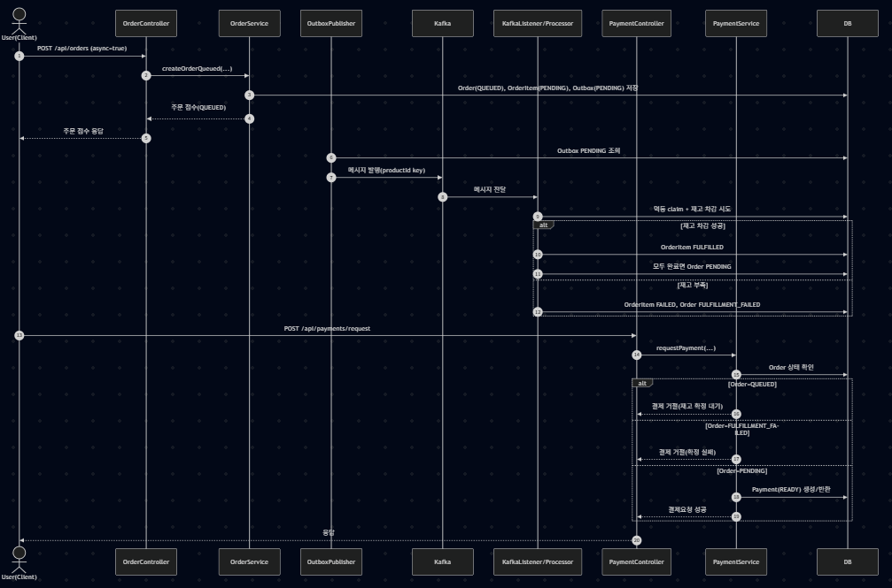

단일 상품에 대해 동시에 다수의 주문·결제 요청을 보내는 k6 시나리오로 Hot Spot 동시성을 검증한 과정과, 데드락·DB 커넥션 풀 고갈에 이어 Kafka + Transactional Outbox + 멱등 처리로 구조를 바꾼 내용을 정리
k6 시나리오 스크립트
per-vu-iterations로 VU 수만큼 거의 동시에 1회씩 실행하고, setup에서 로그인·지갑 충전 후 본문에서는 주문 생성 → 결제
요청(idempotency) → 결제 승인 순으로 호출한다.
import http from 'k6/http';
import { check, sleep } from 'k6';
import { Counter, Rate } from 'k6/metrics';
const BASE_URL = __ENV.BASE_URL || 'http://localhost:8080/api';
const VUS = Number(__ENV.VUS || '200');
const DURATION = __ENV.DURATION || '10s';
const USER_PASSWORD = __ENV.USER_PASSWORD || 'Test1234!';
const USER_PREFIX = __ENV.USER_PREFIX || 'loaduser';
const USER_DOMAIN = __ENV.USER_DOMAIN || 'opay.test';
const PRODUCT_ID = Number(__ENV.PRODUCT_ID || '1');
const QUANTITY = Number(__ENV.QUANTITY || '1');
const CHARGE_AMOUNT = Number(__ENV.CHARGE_AMOUNT || '500000');
const orderSuccessCount = new Counter('order_success_count');
const paymentSuccessCount = new Counter('payment_success_count');
const businessFailRate = new Rate('business_fail_rate');
const unexpectedFailRate = new Rate('unexpected_fail_rate');
export const options = {
scenarios: {
payment_concurrency: {
executor: 'per-vu-iterations',
vus: VUS,
iterations: 1,
maxDuration: DURATION,
},
},
thresholds: {
http_req_failed: ['rate<0.8'],
unexpected_fail_rate: ['rate<0.05'],
},
};
function userByVu(vu) {
return {
email: `${USER_PREFIX}${vu}@${USER_DOMAIN}`,
password: USER_PASSWORD,
};
}
function authHeaders(token) {
return {
headers: {
Authorization: `Bearer ${token}`,
'Content-Type': 'application/json',
},
};
}
function safeJson(res) {
try {
return res.json();
} catch (_e) {
return null;
}
}
function idempotencyKey(prefix) {
return `${prefix}_${__VU}_${Date.now()}_${Math.random().toString(36).slice(2, 10)}`;
}
export function setup() {
const users = Array.from({ length: VUS }, (_v, i) => userByVu(i + 1));
const tokensByVu = {};
for (let i = 0; i < users.length; i += 1) {
const vu = i + 1;
const user = users[i];
const loginRes = http.post(
`${BASE_URL}/auth/login`,
JSON.stringify({ email: user.email, password: user.password }),
{ headers: { 'Content-Type': 'application/json' }, tags: { endpoint: 'auth_login' } }
);
if (loginRes.status !== 200) {
console.log(`[setup] login failed vu=${vu} status=${loginRes.status} body=${loginRes.body}`);
continue;
}
const body = safeJson(loginRes);
const token = body && body.accessToken ? body.accessToken : null;
if (!token) {
console.log(`[setup] no token vu=${vu}`);
continue;
}
tokensByVu[vu] = token;
const chargeRes = http.post(
`${BASE_URL}/wallets/charge`,
JSON.stringify({ amount: CHARGE_AMOUNT }),
{ ...authHeaders(token), tags: { endpoint: 'wallet_charge' } }
);
if (chargeRes.status !== 200 && chargeRes.status !== 201) {
console.log(`[setup] charge failed vu=${vu} status=${chargeRes.status} body=${chargeRes.body}`);
}
}
return { tokensByVu };
}
export default function (data) {
const vu = __VU;
const token = data.tokensByVu[String(vu)] || data.tokensByVu[vu];
if (!token) {
unexpectedFailRate.add(1);
console.log(`[default] missing token vu=${vu}`);
return;
}
const orderRes = http.post(
`${BASE_URL}/orders?clearCart=false`,
JSON.stringify({
items: [{ productId: PRODUCT_ID, quantity: QUANTITY }],
}),
{ ...authHeaders(token), tags: { endpoint: 'orders_create' } }
);
const orderOk = orderRes.status === 201;
const orderBusinessFail = orderRes.status === 400 || orderRes.status === 409 || orderRes.status === 422;
if (!orderOk) {
businessFailRate.add(orderBusinessFail ? 1 : 0);
unexpectedFailRate.add(orderBusinessFail ? 0 : 1);
check(orderRes, {
'order is success or business-fail': () => orderBusinessFail,
});
if (!orderBusinessFail) {
console.log(`[order] unexpected status=${orderRes.status} body=${orderRes.body}`);
}
return;
}
orderSuccessCount.add(1);
const orderBody = safeJson(orderRes);
if (!orderBody || !orderBody.id || !orderBody.totalAmount) {
unexpectedFailRate.add(1);
console.log(`[order] invalid response body status=${orderRes.status} body=${orderRes.body}`);
return;
}
const requestRes = http.post(
`${BASE_URL}/payments/request`,
JSON.stringify({
orderId: orderBody.id,
amount: orderBody.totalAmount,
method: 'CARD',
idempotencyKey: idempotencyKey('k6req'),
}),
{ ...authHeaders(token), tags: { endpoint: 'payments_request' } }
);
const requestOk = requestRes.status === 201;
const requestBusinessFail = requestRes.status === 400 || requestRes.status === 409 || requestRes.status === 422;
if (!requestOk) {
businessFailRate.add(requestBusinessFail ? 1 : 0);
unexpectedFailRate.add(requestBusinessFail ? 0 : 1);
check(requestRes, {
'payment request is success or business-fail': () => requestBusinessFail,
});
if (!requestBusinessFail) {
console.log(`[payment-request] unexpected status=${requestRes.status} body=${requestRes.body}`);
}
return;
}
const requestBody = safeJson(requestRes);
if (!requestBody || !requestBody.paymentId || !requestBody.idempotencyKey) {
unexpectedFailRate.add(1);
console.log(`[payment-request] invalid body status=${requestRes.status} body=${requestRes.body}`);
return;
}
const approveRes = http.post(
`${BASE_URL}/payments/approve`,
JSON.stringify({
paymentId: requestBody.paymentId,
idempotencyKey: requestBody.idempotencyKey,
}),
{ ...authHeaders(token), tags: { endpoint: 'payments_approve' } }
);
const approveOk = approveRes.status === 200;
const approveBusinessFail = approveRes.status === 400 || approveRes.status === 409 || approveRes.status === 422;
businessFailRate.add(approveBusinessFail ? 1 : 0);
unexpectedFailRate.add(!approveOk && !approveBusinessFail ? 1 : 0);
check(approveRes, {
'payment approve success or business-fail': () => approveOk || approveBusinessFail,
});
if (approveOk) {
paymentSuccessCount.add(1);
} else if (!approveBusinessFail) {
console.log(`[payment-approve] unexpected status=${approveRes.status} body=${approveRes.body}`);
}
sleep(0.05);
}전체 시나리오 구조
[Setup 단계]
↓
유저 로그인 + 지갑 충전
[동시 실행]
↓
1. 주문 생성
↓
2. 결제 요청 (idempotency key 포함)
↓
3. 결제 승인- 상품 하나에 동시에 200개의 주문 요청으로 동시성 테스트
- Hot Spot으로 데이터 정합성·동시성 처리 여부 확인
1차 테스트

photo/posts/TroubleShooting/OPay-동시성테스트/1.png)결과
-
성공:
order_success_count: 25,payment_success_count: 25,business_fail_rate: 0%→ 비즈니스 로직 자체는 정상으로 해석 가능 -
실패:
checks_failed: 87.5% (175/200),unexpected_fail_rate: 87.5%→ 대부분의 요청이 비정상 실패로 집계
에러 코드

photo/posts/TroubleShooting/OPay-동시성테스트/2.png)- 동시에 같은 상품을 업데이트하다 MySQL 데드락:
Deadlock found when trying to get lock - 서로 락을 잡고 대기하다 교착 → 한쪽 트랜잭션 강제 롤백
문제 분석
200명이 동시에 주문
→ 같은 상품 재고 차감
→ DB row lock 경쟁
→ 서로 락 물고 대기
→ 데드락 발생
→ 트랜잭션 강제 롤백
주문 생성 트랜잭션 안에서 상품(Product) 엔티티가 dirty 상태가 되어 커밋 시점에 Hibernate가
UPDATE products SET ... WHERE id=?를 실행하면서, 다른 트랜잭션과 락 순서가 꼬여 데드락이 난 상황으로 분석했다.
첫 번째 대처
OrderService.createOrder 경로에 로그를 심어, 일부 스레드는 커밋까지 통과하고 일부는 커밋(또는 flush 직전)에서 데드락이
나는지 확인했다.

photo/posts/TroubleShooting/OPay-동시성테스트/3.png)해결 (1단계): 벌크 재고·엔티티 dirty 제거
비관적 락은 데드락 가능성은 줄이나 대기·처리량 저하가 있어 최후의 수단으로 두고, 재고는 DB 한 번의 UPDATE로만 맞추고 주문 흐름에서는 Product 엔티티를 더럽히지 않는 방향으로 바꿨다.
- 이전: 메모리에서 stock만 변경 → JPA가 커밋 시 넓은
UPDATE products→ 동시 주문 시 행 락·FK·INSERT가 겹치며 데드락 유발 - 이후: 재고는 벌크 UPDATE 한 문장, 주문 줄에서는 Product를 dirty로 만들지 않음 → 불필요한 넓은 UPDATE 제거, 재고 일관성은 DB 원자적 UPDATE
@Modifying(clearAutomatically = false, flushAutomatically = true)
@Query("UPDATE Product p SET p.stock = p.stock - :quantity WHERE p.id = :productId AND p.stock >= :quantity")
int decrementStockIfEnough(@Param("productId") Long productId, @Param("quantity") int quantity);
@Modifying(clearAutomatically = false, flushAutomatically = true)
@Query("UPDATE Product p SET p.stock = p.stock + :quantity WHERE p.id = :productId")
int incrementStock(@Param("productId") Long productId, @Param("quantity") int quantity);decrementStockIfEnough: 한 문장 UPDATE로 읽기·쓰기를 묶어 SELECT 후 판단 시 생기는 레이스를 줄임incrementStock: 주문 취소 시 재고 복구-
clearAutomatically = false: 벌크 후 영속성 컨텍스트를 비우지 않아OrderItem등 후속 작업과 맞춤. DB stock과 메모리 Product 스냅샷이 어긋날 수 있으나 이후 Product 필드를 쓰지 않도록OrderItemInfo로 스냅샷만 들고 간다. flushAutomatically = true: 벌크 직전에 미반영 변경(예: 방금 저장한 Order)을 먼저 flush
OrderItemInfo는 주문 당시 상품명·가격·수량을 고정하는 중간 객체로, 주문 생성 후 가격 변경 등으로 조회 값이 흔들리는 것을 막는다.
class OrderItemInfo {
Long productId;
String productName;
Integer quantity;
Long price;
}흐름: Product 조회 → OrderItemInfo 변환 → 이후 엔티티는 쓰지 않음 → 벌크 재고 갱신.
재고는 한 문장 UPDATE로 맞춰 원자적 갱신으로 레이스를 줄였다.
2차 테스트

photo/posts/TroubleShooting/OPay-동시성테스트/4.png여전히 높은 실패율이 관측되었다.

photo/posts/TroubleShooting/OPay-동시성테스트/5.png- 기존 데드락 패턴은 완화되었으나, DB 커넥션 풀이 꽉 차 connection timeout이 발생
application.yml에서 Hikarimaximum-pool-size: 50,connection-timeout: 5000등으로, 유휴 커넥션이 없을 때 약 5초 대기 후 실패
풀 크기를 VU에 맞춘 실험

photo/posts/TroubleShooting/OPay-동시성테스트/6.png커넥션 풀을 VU에 가깝게 늘리면 동시성 관점에서는 나아질 수 있으나(p95 등은 여전히 부담), VU가 더 커지면 다시 한계에 부딪히므로 근본 해법은 아니다.
구조적 원인
- 주문 상태에 “대기(큐)”가 없어 준비 → 완료 사이 실패가 곧바로 사용자 실패로 이어짐
createOrder,requestPayment,approvePayment등이 한 트랜잭션·긴 구간에 여러 엔티티를 묶어 커넥션 점유 시간이 길어짐
목표 아키텍처
[Client]
↓
[API 서버]
↓
Order 생성 (QUEUED)
↓
[Message Queue]
↓
[Worker]
↓
stock 감소 + order 확정Kafka·Outbox 설계 시 고려 사항
- 순서: 파티션 단위 순서만 보장 → 파티션 키를
productId로 두어 동일 상품 라인 직렬화. 한 주문에 상품이 여러 개면 파티션·메시지 설계를 따로 잡아야 함. - 중복(at-least-once): 컨슈머는 멱등해야 함. 처리 후 offset 커밋 전 장애 시 재전달 → 재고 이중 차감·이중 승인 방지 필요.
- 실패 유형: 일시적(데드락, 네트워크, 타임아웃) vs 비즈니스(재고 부족, 잔액 부족) 분리
- Hot spot: 전 상품이 아니라 일부 상품에 집중 → QPS, lag, retry 등으로 hotspot 기준·전략 분리
- 트랜잭션 경계: 긴 단일 TX를 짧은 TX로 쪼개되, DB와 Kafka 사이에는 원자성이 없으므로 Outbox 등으로 정합성 보완
- 메시지: 엔티티 전부가 아닌 최소 필드만 전달
Transactional Outbox 개념은 블로그 글 Transactional Outbox 패턴에서 따로 정리해 두었다.
개선 후 부하 테스트

photo/posts/TroubleShooting/OPay-동시성테스트/7.png
photo/posts/TroubleShooting/OPay-동시성테스트/8.png — 1품목 400 동시 요청전체 구조 (요약)
[Controller]
→ OrderService (동기 or 비동기 선택)
[OrderService]
→ 주문 생성
→ (비동기면 Outbox 기록)
[OutboxPublisher]
→ Kafka 전송
[KafkaListener]
→ Processor 실행
[Processor]
→ 재고 차감 + 상태 변경
[PaymentService]
→ 재고 확정된 주문만 결제 가능요청 스레드가 DB를 오래 잡지 않도록 API는 짧게, 재고 확정은 워커에서 직렬·멱등하게 처리한다.
| 문제 | 원인 |
|---|---|
| Deadlock | 동시 stock update |
| Connection pool 부족 | 긴 트랜잭션 |
| 실패율 높음 | retry + 경쟁 |
| 해결 | 어떻게 |
|---|---|
| Deadlock ↓ | Kafka로 상품별 직렬화 |
| Connection 문제 ↓ | 짧은 TX |
| 처리량 ↑ | worker 병렬 |
| 정합성 | Outbox + idempotency |
주문·재고 상태 모델
public enum OrderStatus {
QUEUED, // 비동기: 접수만, 재고 확정 대기
FULFILLMENT_FAILED, // 비동기: 일부/전체 재고 확정 실패
PENDING, // 재고 반영 완료, 결제 가능
CONFIRMED,
PREPARING,
SHIPPED,
DELIVERED,
CANCELLED
}비동기 경로를 위해 QUEUED, FULFILLMENT_FAILED를 추가했다. 흐름은 비동기 확정 단계와 이후 비즈니스 단계로 나뉜다.
@Enumerated(EnumType.STRING)
@Column(name = "fulfillment_status", nullable = false, length = 20)
private FulfillmentStatus fulfillmentStatus;
public enum FulfillmentStatus {
NOT_REQUIRED, // 동기: 주문 시 이미 재고 반영
PENDING, // 비동기: 워커 대기
FULFILLED,
FAILED
}
주문(비즈니스 상태)과 줄 단위 재고 확정(물리 상태)을 분리해, 한 주문에 여러 상품일 때 부분 실패를 표현한다. 모든 항목이
FULFILLED이면 주문을 PENDING으로, 하나라도 실패하면 FULFILLMENT_FAILED 등으로 모은다.
Outbox·멱등 저장소
@Entity
@Table(name = "order_fulfillment_outbox")
public class OrderFulfillmentOutbox {
@Id @GeneratedValue(strategy = GenerationType.IDENTITY)
private Long id;
@Column(name = "order_item_id", nullable = false, unique = true)
private Long orderItemId;
@Column(name = "order_id", nullable = false)
private Long orderId;
@Column(name = "product_id", nullable = false)
private Long productId;
@Column(name = "user_id", nullable = false)
private Long userId;
@Column(nullable = false)
private Integer quantity;
@Enumerated(EnumType.STRING)
@Column(nullable = false, length = 20)
private OutboxStatus status = OutboxStatus.PENDING;
// createdAt, sentAt, markSent() …
public enum OutboxStatus { PENDING, SENT }
}DB에 먼저 기록 후 Kafka 전송, 성공 시 SENT로 표시해 발행과 DB 상태를 맞춘다.
public interface OrderFulfillmentOutboxRepository extends JpaRepository<OrderFulfillmentOutbox, Long> {
@Query("SELECT o FROM OrderFulfillmentOutbox o WHERE o.status = :st ORDER BY o.id ASC")
List<OrderFulfillmentOutbox> findPendingBatch(@Param("st") OrderFulfillmentOutbox.OutboxStatus st, Pageable pageable);
}@Entity
@Table(name = "order_fulfillment_processed")
public class OrderFulfillmentProcessed {
@Id
@Column(name = "order_item_id")
private Long orderItemId;
@Column(name = "processed_at", nullable = false)
private Instant processedAt = Instant.now();
}@Modifying
@Query(value = "INSERT IGNORE INTO order_fulfillment_processed (order_item_id, processed_at) "
+ "VALUES (:orderItemId, CURRENT_TIMESTAMP(6))", nativeQuery = true)
int claimInsertIgnore(@Param("orderItemId") Long orderItemId);INSERT IGNORE로 최초 삽입 시에만 재고 처리를 진행하는 멱등 클레임 패턴.
long countByOrderIdAndFulfillmentStatus(Long orderId, OrderItem.FulfillmentStatus status);@JsonIgnoreProperties(ignoreUnknown = true)
public record OrderFulfillmentMessage(
long orderItemId,
long orderId,
long userId,
long productId,
int quantity,
String eventId
) { }OrderFulfillmentProcessor (핵심)
@Transactional(noRollbackFor = IllegalStateException.class)
public void process(OrderFulfillmentMessage msg) {
int claimed = processedRepository.claimInsertIgnore(msg.orderItemId());
if (claimed == 0) {
log.debug("멱등 스킵(이미 처리됨): orderItemId={}", msg.orderItemId());
return;
}
OrderItem item = orderItemRepository.findById(msg.orderItemId())
.orElseThrow(() -> new IllegalStateException("order_item 없음: " + msg.orderItemId()));
Order order = item.getOrder();
if (order.getStatus() == Order.OrderStatus.CANCELLED) {
log.info("주문 취소됨, 재고 차감 생략: orderId={}", order.getId());
return;
}
if (item.getFulfillmentStatus() != OrderItem.FulfillmentStatus.PENDING) {
log.debug("이미 처리된 주문항목: orderItemId={}, status={}",
msg.orderItemId(), item.getFulfillmentStatus());
return;
}
int updated = productRepository.decrementStockIfEnough(msg.productId(), msg.quantity());
if (updated == 0) {
item.markFulfillmentFailed();
if (order.getStatus() == Order.OrderStatus.QUEUED) {
order.updateStatus(Order.OrderStatus.FULFILLMENT_FAILED);
}
return;
}
item.markFulfillmentFulfilled();
tryCompleteOrder(order.getId());
}재고 차감은 워커에서만 수행하고, API는 주문·아웃박스 기록까지만 짧은 트랜잭션으로 끝낸다.
핵심 요약: Outbox → Kafka 전송 보장, Processed → 중복 방지, Processor → 실제 재고, Repository count → 주문 완료 판단, Message → 이벤트 전달.
동기 vs 비동기 주문 API
createOrder: 주문 + 벌크 재고 + OrderItem(NOT_REQUIRED) — 즉시 확정, TX는 상대적으로 김-
createOrderQueued:QUEUED주문 + OrderItemPENDING+ Outbox만 — 재고는 Kafka 워커에서, API TX는 짧음
@Transactional
public OrderResponse createOrderQueued(Long userId, OrderRequest request, boolean clearCart) {
// User 조회, OrderItemInfo로 스냅샷·재고 사전 검증(읽기 기준)
// Order(status=QUEUED) 저장 → OrderItem(fulfillment=PENDING) → OrderFulfillmentOutbox 저장
// clearCart 옵션 처리 후 OrderResponse 반환
}(전체 구현은 저장소의 OrderService를 참고.)
결제 게이트
if (order.getStatus() == Order.OrderStatus.QUEUED) {
throw new IllegalArgumentException("주문 재고 확정 대기 중입니다. 잠시 후 결제를 시도해 주세요.");
}
if (order.getStatus() == Order.OrderStatus.FULFILLMENT_FAILED) {
throw new IllegalArgumentException("재고 확정에 실패한 주문은 결제할 수 없습니다.");
}requestPayment에서 idempotency 키 중복 시 기존 Payment 반환, 위 상태에서는 결제 요청을 막는다.
컨트롤러·Kafka 연동
@PostMapping
public ResponseEntity<OrderResponse> createOrder(
...,
@RequestParam(required = false, defaultValue = "false") boolean async) {
OrderResponse response = async
? orderService.createOrderQueued(userId, request, clearCart)
: orderService.createOrder(userId, request, clearCart);
return ResponseEntity.status(HttpStatus.CREATED).body(response);
}@Configuration
@ConditionalOnProperty(name = "opay.kafka.enabled", havingValue = "true")
@EnableKafka
public class OrderKafkaConfiguration { }@Scheduled(fixedDelayString = "${opay.kafka.outbox.publish-interval-ms:500}")
public void publishPending() {
// PENDING Outbox 배치 조회 → JSON 직렬화 → kafkaTemplate.send(topic, productIdKey, json)
// 전송 성공 시 짧은 TX로 markSent()
}@KafkaListener(
topics = "${opay.kafka.topic.order-fulfillment}",
groupId = "${spring.kafka.consumer.group-id}"
)
public void onMessage(@Payload String payload) throws Exception {
OrderFulfillmentMessage msg = objectMapper.readValue(payload, OrderFulfillmentMessage.class);
orderFulfillmentProcessor.process(msg);
}파티션 키는 productId 문자열로 보내 동일 상품 메시지 순서를 맞춘다.
시퀀스 다이어그램

sync_sequence.png
aync_sequence.png정리
구조 변경 후 비동기 경로(createOrderQueued) 기준으로 동시 400건 수준에서도 성공률이 크게 개선되었다. 이후에는 부하 테스트로
createOrder(동기)와 createOrderQueued(비동기)를 어느 구간에서 선택할지 운영·SLO에 맞게 튜닝하는 단계가 남는다.